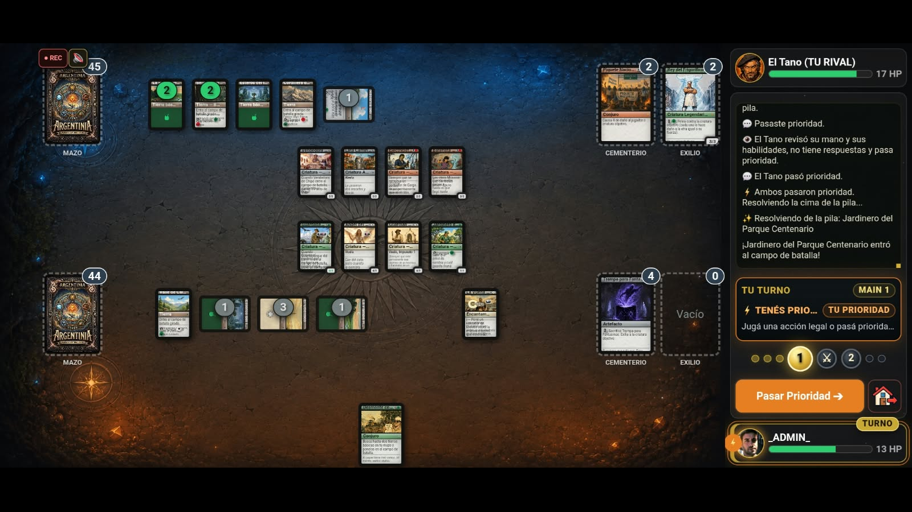
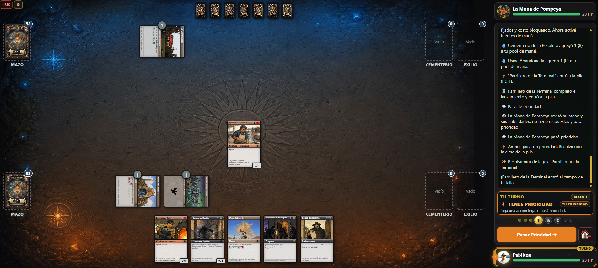
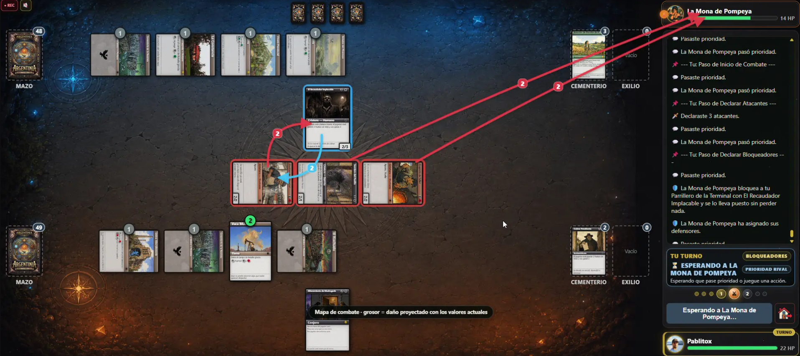
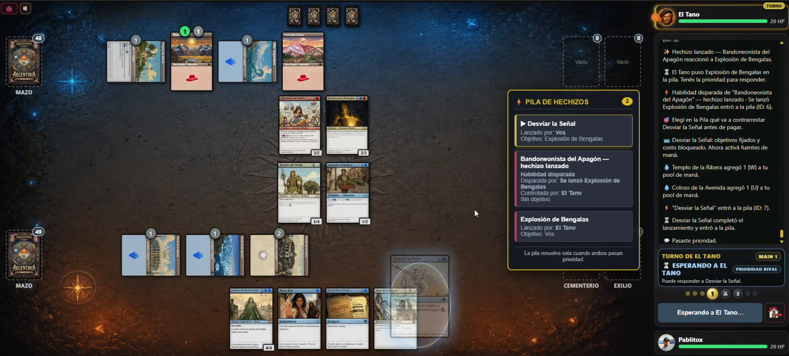
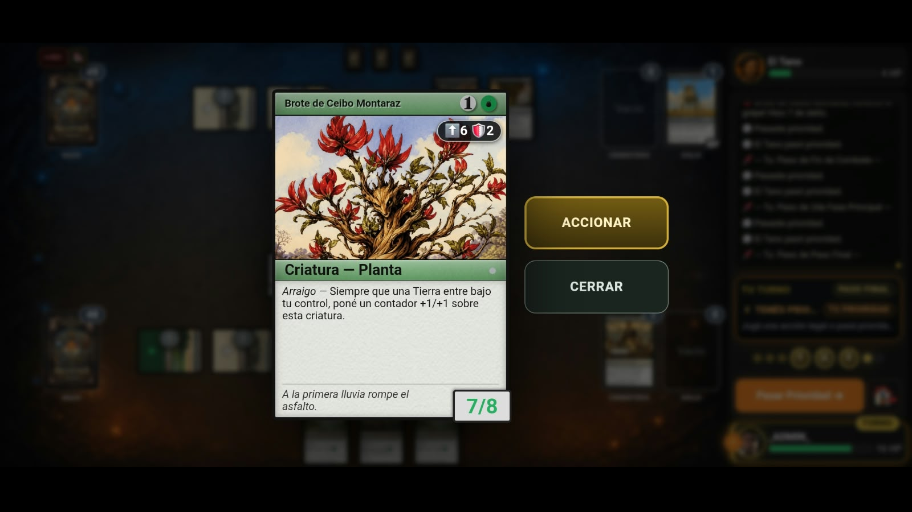
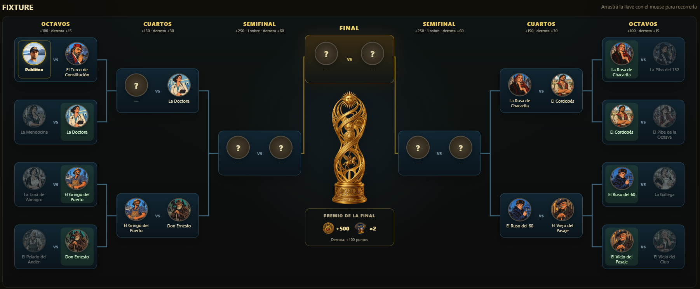
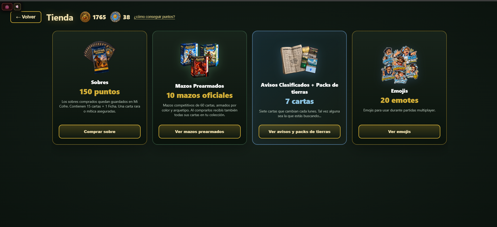
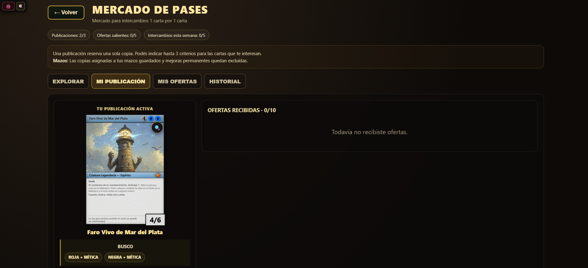
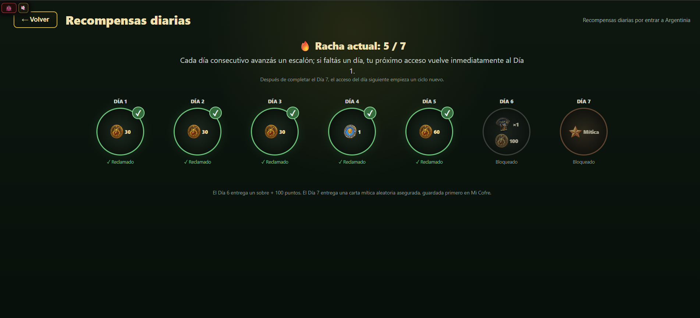
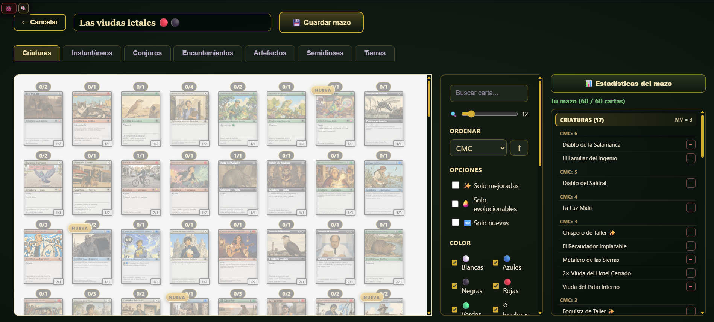

MANUAL DEL JUGADOR
¿Cómo se juega Argentinia?
Esta versión pública reutiliza el contenido del manual disponible dentro del juego para que las reglas y sistemas principales puedan consultarse sin iniciar sesión.
BIENVENIDO A LA MESA
Aprendé lo básico.
Después rompé las reglas con las cartas.
Argentinia es un juego de cartas estratégico por turnos. Construís un mazo, generás maná con Tierras, desplegás permanentes y lanzás hechizos para superar al rival. Las cartas pueden cambiar casi cualquier regla general: cuando una carta contradice una regla básica, seguí el texto de la carta y las opciones que habilita la interfaz.
REGLAS CENTRALES
Objetivo, zonas y condiciones de victoria
Cada jugador comienza normalmente con 20 HP. Ganás cuando llevás los HP del rival a 0 o menos, cuando el rival llega a 10 contadores de Veneno, o cuando intenta robar una carta de un mazo vacío. También podés ganar si el rival abandona.
Mano
Cartas privadas que podés jugar cuando su tipo, costo y timing lo permiten.
Campo de batalla
Tierras, criaturas, apoyos y Semidioses permanecen acá hasta que un efecto los mueva.
Mazo
Tu biblioteca. Robás desde arriba; algunas cartas buscan, miran o reordenan cartas.
Cementerio y Exilio
El Cementerio recibe cartas usadas o destruidas. Exilio es una zona separada y más difícil de recuperar.

MODO DE ENTRADA
Partida simple contra la IA
PARTIDA SIMPLE es la forma más directa de practicar. Te enfrenta a la IA y usa la dificultad elegida en Opciones. Hay distintos niveles de dificultad para que puedas aprender el flujo, probar un mazo nuevo o buscar un desafío mayor.
FLUJO DE PARTIDA
Turno, Tierras, maná y tipos de carta
El turno recorre Enderezar → Mantenimiento → Robo → Main 1 → Combate → Main 2 → Paso final → Limpieza. En tus fases principales podés bajar una Tierra por turno, salvo que un efecto te permita jugar más.
Las Tierras producen maná. Cuando un costo requiere maná, la interfaz te deja elegir las fuentes válidas. Girar una Tierra indica que ya fue utilizada para ese recurso hasta que vuelva a enderezarse.
Tierras
Generan maná y habilitan tu curva de juego. No se lanzan como hechizos.
Criaturas
Atacan, bloquean y pueden tener habilidades disparadas, estáticas o activadas.
Instantáneos
Pueden jugarse cuando tenés prioridad, incluso para responder a otras acciones.
Conjuros
Normalmente se juegan en tu fase principal, con la Pila vacía.
Artefactos y Encantamientos
Permanentes de apoyo; algunos se anexan, otros modifican reglas o generan valor continuo.
Semidioses, Crónicas y Transportes
Usan reglas propias de Creencia, Capítulos y Tripular explicadas más abajo.

ATACAR Y DEFENDER
Combate paso a paso

RESPUESTAS
Pila, prioridad y objetivos
Los hechizos y muchas habilidades no resuelven instantáneamente: primero entran en la Pila. Cada jugador recibe prioridad para responder. Cuando ambos pasan sin agregar nada, resuelve el elemento superior. Por eso, en general, lo último que entró es lo primero que resuelve.
- Los Instantáneos y habilidades con timing adecuado pueden responder a otra acción.
- Los Conjuros, Equipar y habilidades de Creencia suelen exigir timing de conjuro: tu fase principal y Pila vacía.
- Si una carta pide un objetivo, la interfaz resalta únicamente opciones legales.
- Si un objetivo deja de ser legal antes de resolver, el efecto puede no poder aplicarse a ese objetivo.

DICCIONARIO DE JUEGO
Habilidades y mecánicas principales
Las cartas usan terminología propia de Argentinia. Este resumen cubre las palabras que más vas a encontrar; el texto específico de cada carta termina de definir qué hace.

Habilidades de criatura
Mecánicas avanzadas
Anticipá
Mirá cartas superiores y elegí cuáles mandar al fondo; las demás permanecen arriba.
Chusmeá
Mirá cartas superiores y elegí cuáles mandar al Cementerio; las demás quedan arriba.
Amplificá
Elegí permanentes o jugadores que ya tengan contadores; cada elegido recibe uno más de cada tipo que ya tenga.
Yapa
Al lanzar la carta podés pagar un costo adicional para obtener el beneficio extra indicado.
Otra vuelta
Permite volver a lanzar una carta desde el Cementerio pagando el costo indicado.
Zafar
Permite jugar desde el Cementerio pagando su costo y exiliando las cartas requeridas.
En espera
Exiliás la carta con contadores de Tiempo; en tus mantenimientos pierde Tiempo y, al quitar el último, puede jugarse sin pagar su costo de maná.
Vaquita
Podés girar criaturas válidas para ayudar a pagar parte del costo de maná.
Rebuscar
Podés exiliar cartas del Cementerio para reducir la parte genérica de un costo.
Pelea
Dos criaturas se hacen daño entre sí igual a su fuerza; no es un ataque y no gira por sí sola a las criaturas.
Tripular
Girás criaturas con suficiente fuerza total para convertir un Transporte en criatura según su habilidad.
Equipar
Anexa un Equipamiento a una criatura propia usando timing de conjuro, salvo reglas específicas de la carta.
Crónicas
Entran con Capítulo, avanzan por capítulos y disparan cada habilidad cruzada. Después del capítulo final se sacrifican cuando ya no quedan capítulos pendientes.
Semidioses
Usan Creencia. Sus habilidades de +/− Creencia se activan con timing de conjuro y, normalmente, una vez por turno.
Transformar
Algunas cartas de dos caras cambian su cara efectiva en el campo de batalla y conservan su estado físico.
Arraigo
Habilidades que reaccionan a la entrada de Tierras o al evento indicado por la propia carta.
CUATRO PARTIDOS
Torneo
El Torneo arma un fixture de 16 participantes y eliminación directa: Octavos → Cuartos → Semifinal → Final. Cuatro victorias te separan del campeonato.
- Perder un partido te elimina del Torneo.
- Entre partidos podés volver al menú, cerrar el juego y continuar más tarde.
- Una partida de Torneo ya iniciada no se pausa: abandonar, cerrar o recargar durante esa partida cuenta como derrota.
- Cada ronda ganada entrega el premio configurado para esa etapa.
- Si superaste el límite diario de Torneos premiados, podés seguir jugando en modo práctica.

JUGAR CON OTRA PERSONA
Multijugador, ELO, chat y emotes
Desde Multijugador podés crear una sala y compartir un código de 6 caracteres, o unirte a la sala de otra persona usando su código. Una vez emparejados, cada jugador elige su mazo y confirma su preparación antes de empezar.
- Las acciones se sincronizan con el servidor; si la conexión se corta, el juego puede pausar acciones mientras reconecta.
- El resultado puede modificar tu ELO y aparece resumido al final de la partida.
- La Bitácora puede mostrar mensajes de jugadores y del sistema. Podés silenciar la comunicación del rival durante esa partida.
- Los emotes gratuitos o adquiridos en Tienda pueden usarse durante partidas multijugador.
PROGRESIÓN Y COLECCIÓN
Tienda y sus secciones
La Tienda usa los saldos del juego y muestra siempre los costos vigentes. Las compras que afectan colección o economía se confirman con el servidor.
Sobres
Comprás el sobre y queda guardado en Mi Cofre. Al abrir un sobre estándar recibís 15 cartas y 1 Ficha.
Avisos Clasificados
Siete cartas rotan cada lunes: 4 Comunes, 2 Poco Comunes y 1 Rara o Mítica. Cada aviso puede comprarse una vez por semana.
Mazos Prearmados
Mazos competitivos de 60 cartas organizados por color y arquetipo. Al comprarlos, sus cartas pasan también a tu colección.
Fichas / Mejoras
Permiten aplicar mejoras permanentes a criaturas elegibles de tu colección, respetando los límites del constructor de mazos.
Emojis
Hay una base gratuita y emotes premium desbloqueables con Puntos para usar en partidas multiplayer.
Mi Cofre
Guarda sobres y recompensas especiales para que las abras cuando quieras desde el menú principal.

INTERCAMBIO ENTRE JUGADORES
Mercado de Pases
El Mercado de Pases permite intercambiar 1 carta ↔ 1 carta entre jugadores. No intervienen Puntos, Fichas ni sobres.
También podés revisar tus publicaciones, ofertas salientes y el historial de intercambios completados. Los límites activos se muestran o aplican desde la configuración vigente del juego.

VOLVÉ CADA DÍA
Daily Rewards y Mi Cofre
Las Recompensas diarias usan una racha de 7 accesos consecutivos. Tu primer acceso válido es Día 1; cada fecha consecutiva avanza un escalón. Si faltás un día, el próximo acceso vuelve a Día 1. Después de completar Día 7, el acceso consecutivo siguiente inicia un nuevo ciclo.
El Día 6 guarda el sobre en Mi Cofre. El Día 7 guarda una recompensa mítica asegurada para abrir desde allí. La racha usa la fecha oficial del servidor en Argentina (UTC−3), no el reloj de tu dispositivo.

CONSTRUCCIÓN
Mazos, colección y Enciclopedia
Mis Mazos te deja crear, editar y guardar mazos. El formato actual trabaja con mazos de 60 cartas y un máximo general de 4 copias de una misma carta, salvo Tierras básicas. El constructor valida automáticamente tamaño, propiedad de cartas y límites vigentes antes de guardar.
La Enciclopedia sirve para explorar el pool y tu progreso de colección. Las cartas recién obtenidas pueden destacarse en el constructor para ayudarte a encontrarlas.

RUTA SUGERIDA
El juego completo, en qué orden conviene descubrirlo
No necesitás aprender todo antes de jugar. Una buena progresión es ir incorporando sistemas a medida que entendés la mesa.